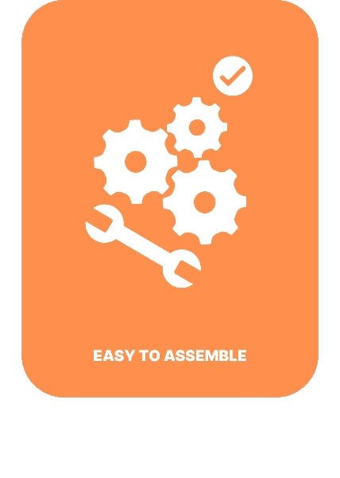
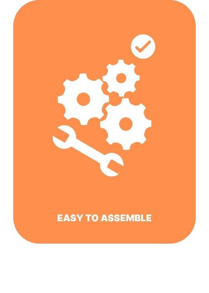

Keep your pond pristine with our remote controlled surface-cleaning device — engineered
specifically for stagnant or low-flow water bodies.
This eco-friendly system gently skims
floating debris like leaves,
plastic, and organic waste using a stable dual-pontoon design
and an efficient net collection system.
The Remote Controlled fish farm cleaner is an innovative solution designed to enhance the sustainability of aquaculture environments. It efficiently collects waste and debris in fish farms, helping maintain water quality and improve aquatic health. This system aims to reduce manual labor while promoting eco-friendly practices in fish farming operations.

The Fish Farm Cleaner is a remotely operated solution engineered
to maintain
cleanliness in aquaculture environments.
With durable components and a user-friendly interface,
it removes waste materials efficiently—supporting
healthier aquatic life and reducing manual cleaning efforts.
Key design elements include:
> Dual side pontoons for stability in flowing water.
> Rotating waste collection mechanism with a front-mounted rake for capturing floating debris.
> Rear conveyor system (mesh structure) designed to transport collected waste into onboard storage compartments.
>Lightweight and modular structure for easy deployment and maintenance.
The exploded view of the Remote Controlled Fish Farm Cleaner illustrates the arrangement of its mechanical and electrical components, providing a clear understanding of its construction and functionality. It highlights key parts such as the flooters for stability, the net for collecting debris, and the remote control mechanism for transporting waste. Additionally, the exploded view showcases the electrical system, including the Bluetooth module,propulsion motors , and battery placement, demonstrating how the cleaner operates remotely. Wires and circuit boards are positioned strategically to ensure seamless connectivity, allowing precise user control. This breakdown helps users visualize the assembly process, making maintenance and troubleshooting more accessible. By presenting the cleaner’s intricate design in a structured format, the exploded view reinforces its efficiency, durability, and ease of operation, ensuring effective aquaculture cleaning with minimal manual labor while promoting sustainability and improved water quality.
.png) 


REMOTE CONTROLLED VIA BLUETOOTH
TThe Remote Controlled Fish Farm Cleaner simplifies aquaculture maintenance with
Bluetooth-enabled navigation. Users can remotely operate the device, reducing manual cleaning efforts.
With seamless connectivity, it efficiently collects floating debris. This hands-free system enhances convenience,
minimizes labor demands, and improves water quality in land-based aquaculture environments.
EASY TO ASSEMBLE AND MAINTAN
The Remote Controlled Fish Farm Cleaner features a lightweight, modular design
for easy assembly and maintenance. Its user-friendly structure allows quick setup and hassle-free upkeep. With durable components, the cleaner remains
efficient over time, ensuring reliable performance while reducing labor demands in land-based aquaculture environments.
USER-FRIENDLY
DEVICE
The Remote Controlled Fish Farm Cleaner is designed with a user-friendly interface,
making operation simple and accessible. Its intuitive controls allow users to navigate the device effortlessly, ensuring efficient debris collection with minimal effort.
This streamlined functionality enhances convenience, reduces manual labor, and promotes effective maintenance in land-based aquaculture.
MADE FROM ECO-FRIENDLY MATERIALS
The Remote Controlled Fish Farm Cleaner is built using eco-friendly materials, ensuring
sustainable aquaculture maintenance. Its non-toxic, durable components minimize environmental impact while maintaining efficiency in debris collection. By reducing
plastic waste and promoting responsible material use, this cleaner supports cleaner water and healthier aquatic ecosystems in land-based aquaculture.